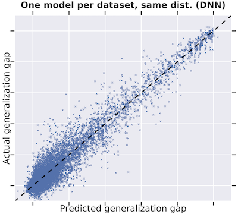

|
Scott Yak
scott.<last name>.xy at gmail com
I am a research engineer at Google Research,
where I serve as the tech lead for the Tabular Foundation Models
(IngesTables) project.
While at Google, my work spans from research to production in projects such as
AdaNet,
TFX,
and Tabular Foundation Models.
Google Scholar
/
GitHub /
LinkedIn
|
|
* indicates equal contribution
|
|
IngesTables: Scalable and Efficient Training of LLM-Enabled Tabular Foundation Models
Scott Yak, Yihe Dong, Javier Gonzalvo, Sercan Arik
Spotlight Talk NeurIPS 2023 Second Table Representation Learning Workshop, 2023
|
|
|
Methods and Analysis of The First Competition in Predicting Generalization of
Deep Learning
Yiding Jiang, Parth Natekar*, Manik
Sharma*, Sumukh K Aithal*, Dhruva Kashyap*,
Nataraja
Subramanyam*,Carlos Lassance*, Daniel M. Roy, Gintare Karolina
Dziugaite, Suriya Gunasekar,
Isabelle Guyon, Pierre Foret, Scott Yak, Hossein Mobahi, Behnam Neyshabur*, Samy Bengio
PMLR: NeurIPS 2020 Competition and Demonstration Track, 2020
[competiton page]
[Codalab]
[competition
dataset]
[competition code]
|
|

|
Towards Task and Architecture-Independent Generalization Gap Predictors
Scott Yak, Javier Gonzalvo, Hanna Mazzawi
Spotlight Talk ICML 2019 Workshop on Understanding and Improving Generalization in Deep Learning, 2019
|
|
{kind=link}